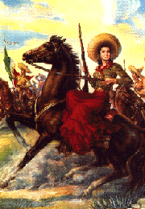

BORD(ER)OTICS READING LIST

"Adelita" from Mexican Calendar, circa 1950.
Agosin, Marjorie NOCHE ESTRELLADA
Cantú, Norma CANÍCULA
Gaspar de Alba THREE TIMES A WOMAN
Levi Calderón, Sara DOS MUJERES
Obejas, Achy WE CAME ALL THE WAY FROM CUBA SO YOU COULD DRESS LIKE THAT?
Pedén, Margaret Sayers POEMS, PROTEST, AND A DREAM
Salas, Elizabeth SOLDADERAS IN THE MEXICAN MILITARY
Serros, Michele CHICANA FALSA